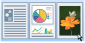

Нажмите одну из представленных ниже ссылок, чтобы перейти к описанию.
|

|
|
 См.
См.  См.
См. Поясняет, как можно использовать любую из вкладок [Основные настройки], [Макет страницы], [Окончательная обработка], [Источник бумаги] и [Качество].